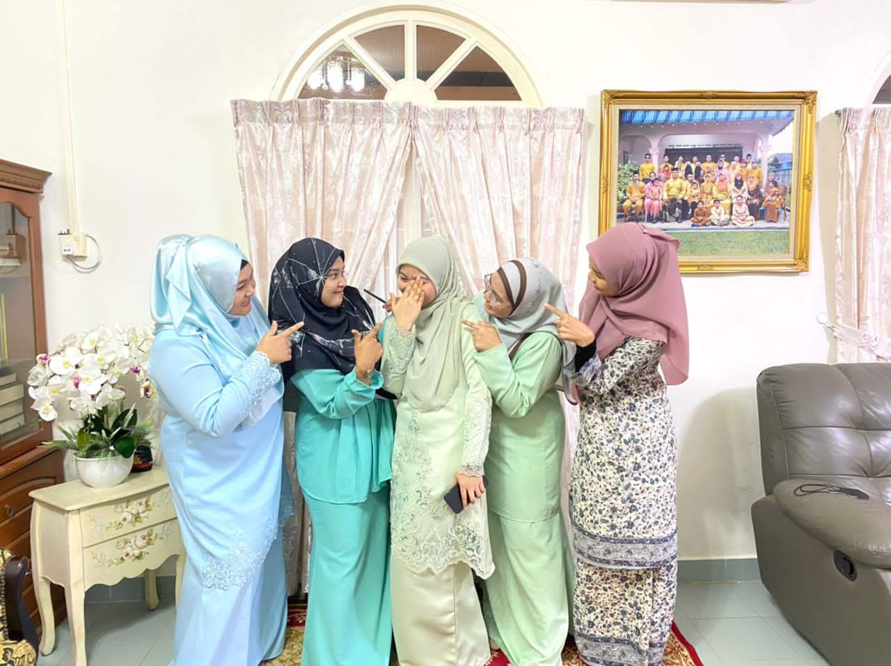
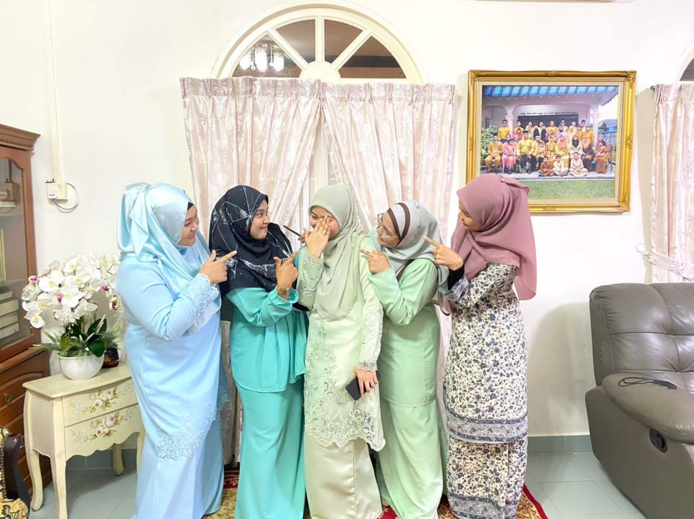

TODOS
I'M A'ISYAH AZIZI
WELCOME TO MY PERSONAL WEBSITE
I'm from class IM246 class JIM2463A
My ID student is 2021847272
This website were created for my IMS456 individual assignment.
ABOUT A'ISYAH AZIZI
MY NAME: NUR A'ISYAH BINTI AZIZI
MY AGE: 21 YEARS OLD (2022)
BORN ON: I WAS BORN ON SUNDAY, 11 MARCH 2001, 08:25 P.M AT HOSPITAL KLUANG
MY SIBLINGS: I'M THE MIDDLE CHILD OF 5 SIBLINGS AND I'M THE LAST DAUGHTER OF MY PARENTS, I HAVE 2 OLDER SISTERS AND 2 YOUNGER BROTHERS
MY FATHER: AZIZI BIN ALI (56 YEARS OLD)
MY MOTHER: NOORAZILA BINTI ZAINAL ABIDIN (46 YEARS OLD)
MY HOBBY: I LIKE TO READ FICTIONAL PHYSICAL OR DIGITAL BOOK
WHAT I LIKE: I'M COFFEE ADDICTED (SIPPING COFFE LIKE A KING 🍵), I LOVE TO SLEEP (TELL ME WHO DOESN'T LOVE TO SLEEP? 😏), AS I MENTIONED I LOVE TO READ (FICTIONAL BOOK @ NOVEL ONLY 😝), AND I LOVE MY FAMILY AND LOVE ONE (DEFINITELY 😃)
MY HOMETOWN: I WAS BORN AND RAISED IN KLUANG, JOHOR FOR MY WHOLELIFE
MY PRIMARY SCHOOL: SEKOLAH KEBANGSAAN ABDUL RAHMAN YASSIN, KLUANG (SKARY)
MY SECONDARY SCHOOL: SEKOLAH MENENGAH KEBANGSAAN SULTAN ABDUL JALIL, KLUANG (SSAJ)
STUDY AT: CURRENTLY I CONTINUE MY STUDY AT UNIVERSITI TEKNOLOGI MARA SEGAMAT CAMPUS IN RECORDS MANAGEMENT FOR MY DEGREE
MY MATRIX NUMBER: 2021847272
CLUB @ ASSOCIATION: I LOVE TO ENVOLVED MYSELF IN ANY CLUB CURRENTLY I'M A MEMBER OF INFORMATION AND RECORD COMMUNITY (IMaRC) UiTM JOHOR AND MY POSITION RIGHT NOW IS THE VICE PRESIDENT OF IMaRC AND NEXT SEMESTER WILL BE THE PRESIDENT OF IMaRC 🤜🤛
MY EDUCATION
PRE-SCHOOL: SK Abdul Rahman Yassin (SKARY) Pre-School {2007}
PRIMARY SCHOOL: SK Abdul Rahman Yassin (SKARY) {2008 - 2013}
ISLAMIC SCHOOL: Sekolah Agama Dato' Ahmad (SADA) {2008 - 2014}
SECONDARY SCHOOL: SMK Sultan Abdul Jalil (SSAJ) {2014 - 2018}
STPM INSTITUTE: SMK Sultan Abdul Jalil (SSAJ) Pre-University {2019 - 2021}
DEGREE INSTITUTE: Universiti Teknologi MARA (UiTM) Johor Branches, Segamat Campus {2021 - 2025}
LA FAMILÍA
As I mentioned earlier on my biodata, I have 5 siblings, my parents were blessed with 3 beautiful daughters and 2 gentleman sons. My parents were married on 1st June 1996 (26 years ago), when they married my father was 30 years old while my mother was 20 years old. They fall in love while work together in the same office. 1 years after they got married, on 26th June 1997 they were blessed with their first child (my sister). They named her with Nur Naziha. On 26th August 1998, my second sister were borned and they name her with Nur Syahidah. On 11th March 2001, here they go with their 3rd child call Nur A'isyah. On 26th June 2005, their first son were borned on that day, Muhammad Umar. And last on 5th September 2011 were borned their last child, Muadz
My father was borned in Muar, Johor while my mother was borned in Lenggeng, Negeri Sembilan.
We lived in Kg. Dato' Abdul Rahman Yassin, Kluang, Johor with my grandmother (father's side). As my father were the last child, he were honored to take care of my grandmother.
Eventhough my mother's side was from Negeri Sembilan, her parents were lived in Kluang also. So when Hari Raya comes, our "kampung" only in Kluang because both of my parents side was in Kluang.
I have a big family, both of my parents have 6 siblings and they were closed enough.
For us family is our everything
MY EXPERIENCE
I never experienced more event but I have experienced some volunteering event on 2022.
The volunteering event was 20th Sukan Malaysia (SUKMA) that take place in Kuala Lumpur area such as Universiti Malaya (UM), Universiti Kebangsaan Malaysia (UKM), Universiti Teknologi MARA (UiTM) Shah Alam, Universiti Tenaga Nasional (UNITEN) and SUKMA also take place in Langkawi for water sports. SUKMA was held from 16 September 2022 - 24 September 2022 but the volunteers need to take our Volunteer Kit at Majlis Sukan Negara (MSN) on 11 September 2022, and start our duty on 12 September 2022.
Since I sign up for volunteer as UiTM student, I was coordinated in UiTM Shah Alam under "Jawatankuasa Pengangkutan, Keselamatan, & Trafik"
The second volunteering project that I joined on 2022 was Karnival Sukan Mahasiswa UiTM (KARISMA) also was take place in UiTM Shah Alam from 28 September 2022 - 5 October 2022. For KARISMA I was coordinated under "Jawatankuasa Teknikal - Badminton"
Both of two volunteering events are the best experienced that I get, if I have the chances I wil repeat over and over.
MI GALERÍA

 

CONTACT ME
Johor, Malaysia
Phone: +60187722736
Email: nuraisyahazizi01@mail.com
Let's get in touch. Send me a message: